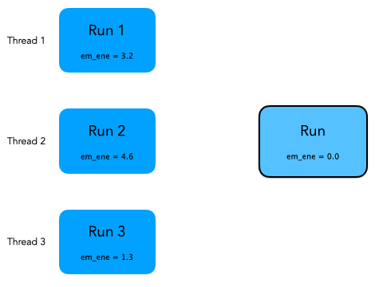

In Exercise 3 of Hands On 3
you have printed on screen, for each simulated event, the hits
collected in the hodosope. In this exercise we will show how to
accumualte some information (the energy deposited in the calorimeters)
over the entire run. We will also show how to merge (i.e.
reduce or combine) the results in a multi-threaded application.
The goal of these two exercises is to calculate the average energy
released in the electromagnetic and hadronic calorimeter and the
average partial shower shape. A shower shape is a quantity that
somehow describes the charactersitics spatial dimensions of
particle showers in calorimeters. In this example we will calcualte
the fraction of energy released in the electromagnetic
calorimeter. An electron or gamma has the em
fraction very close to 1; a hadron will have a smaller
value of the em
fraction.
During Exercise 1 you will modify the application to accumulate the
energy released in calorimeters in each event. You will modify 2 files: Run.hh and
Run.cc, implementing a user-defined G4Run class.
During Exercise 2 you will modify the file
RunAction.cc, that implements the user defined
G4UserRunAction class, to retrieve the information
collected in the first exercise and dump on screen the results of your
data analysis: energy in calorimeters and shower shape.
During the simulation of a run an instance of a G4Run exists
and is managed by Geant4 kernel. User should extend this class to
accumulate user data.
Create a user-defined run class
Modify the file Run.hh, a class inheriting
from G4Run. Extend the class to contain the information
to be stored: the total energy deposited in the two calorimeters and the
accumulated shower shape (of types double). Since you will need to access hits
collections from calorimeters, add two integer data members to keep
track of the hits collection ids.
Question: what are the data members of the base class
G4Run?
Solution
| Run.hh File: |
class Run : public G4Run {
public:
Run();
virtual ~Run() {};
virtual void RecordEvent(const G4Event*);
virtual void Merge(const G4Run*);
G4double GetEmEnergy() const { return em_ene; }
G4double GetHadEnergy() const { return had_ene; }
G4double GetShowerShape() const { return shower_shape; }
private:
G4double em_ene; //accumulated energy in EM calo
G4double had_ene;//accumulated energy in HAD calo
G4double shower_shape;//accumulated shower shape (
f=EM/(EM+HAD) )
G4int ECHCID; //ID for EM hits collection
G4int HCHCID; //ID for HAD hits collection
};
|
Accumualte physics quantities
Modify in file Run.cc the method
RecordEvent. This method is called by Geant4 kernel at
the end of each event passing the pointer to the current event.
Retrieve here the hits collections of both calorimeters, loop on all hits and
calculate the needed physics quantities. In the constructor of Run class
initialize the class data members to an initial value (0 for energy
and shape and -1 for ids).
Hint: Note that the initial value of -1 for hits id allows
you to be efficient in searching the hits by collection: if id==-1 you
need to search the collections, if not you already did this opeartion
and you can skip the heavy search by string.
Solution
| Run.cc |
Run::Run()
: G4Run() ,
em_ene(0), had_ene(0), shower_shape(0) , ECHCID(-1), HCHCID(-1)
{ }
void Run::RecordEvent(const G4Event* evt)
{
//Forward call to base class
//This is important, can you tell why?
G4Run::RecordEvent(evt);
if ( ECHCID == -1 || HCHCID == -1) {
G4SDManager* sdManager = G4SDManager::GetSDMpointer();
ECHCID = sdManager->GetCollectionID("EMcalorimeter/EMcalorimeterColl");
HCHCID = sdManager->GetCollectionID("HadCalorimeter/HadCalorimeterColl");
}
G4HCofThisEvent* hce = evt->GetHCofThisEvent();
if (!hce) {
G4ExceptionDescription msg;
msg << "No hits collection of this event found.\n";
G4Exception("Run::RecordEvent()","Code001", JustWarning, msg);
return;
}
const EmCalorimeterHitsCollection* emHC = static_cast<const EmCalorimeterHitsCollection*>(hce->GetHC(ECHCID));
const HadCalorimeterHitsCollection* hadHC = static_cast<const HadCalorimeterHitsCollection*>(hce->GetHC(HCHCID));
if ( !emHC || !hadHC )
{
G4ExceptionDescription msg;
msg << "Some of hits collections of this event not found.\n";
G4Exception("Run::RecordEvent()","Code001", JustWarning, msg);
return;
}
G4double em = 0;
G4double had = 0;
for (size_t i=0;i<emHC->GetSize();i++)
{
EmCalorimeterHit* hit = (*emHC)[i];
em += hit->GetEdep();
}
for (size_t i=0;i<hadHC->GetSize();i++)
{
HadCalorimeterHit* hit = (*hadHC)[i];
had += hit->GetEdep();
}
had_ene += had;
em_ene += em;
if ( had+em > 0 ) //Protect agains the case had+em=0
shower_shape += ( em/(had+em) );
}
|
Implement reduction for multi-threading.
This step is optional for application without multi-thread support.
Why you need this? Remember in a multi-threaded application each
worker thread has its own instance of class
G4Run. Events are distributed and you end the simulation with many run
objects (one per worker thread). Geant4 provides a way to merge these
sub-runs into a single global one. This is done implementing a
Merge method in the Run class.
Geant4 kernel works in a way that the worker
threads will call the Merge method of the master run
object passing a pointer to the worker run object. This
animation explains what is happening under the hood (Geant4
kernel will take care of synchronizing the threads to avoid race conditions):

Solution
| Run.cc File: |
void Run::Merge(const G4Run* aRun)
{
const Run* localRun = static_cast<const Run*>(aRun);
em_ene += localRun->GetEmEnergy();
had_ene += localRun->GetHadEnergy();
shower_shape += localRun->GetShowerShape();
//Forward call to base-class
//This is important, can you tell why?
G4Run::Merge(localRun);
}
|
Create an instance of user-defined run class at each new run.
Now that you have extended G4Run you need to tell
Geant4 kernel to use it instead of the default one. To do so you need
to modify the method RunAction::GenerateRun and return an instance of
Run instead of the default (this method is called by
Geant4 at the beginning of each run). The method is already implemented in
RunAction.cc file.
Solution
| RunAction.cc File |
G4Run* RunAction::GenerateRun() {
return new Run;
}
|
Calculate physics quantities and print them on screen.
Now that Run class has been modified to include user
data we can print out the summary of our simple data analysis at the end of the
run. To do that we modify the method EndOfRunAction of
the RunAction class (RunAction.cc file). Retrieve from
the run object the information you need and calculate the average
energy release in calorimeters and the shower shape.
Hint 1: Note that Geant4 will pass you an object of type
G4Run (the base class). You need to make an appropriate cast to
access your data.
Hint 2: The total number of events is a data member of base
class G4Run. Check in online documentation how to get
it.
Hint 3: The quantity have been stored in Geant4 natural
units. A useful function G4BestUnit can be used to print
on screen a variable with a dimension. For example:
G4double someValue = 0.001*GeV;
G4cout<< G4BestUnit( someValue , "Energy" )<<G4endl; //Will print "1 MeV"
|
Solution
| RunAction.cc File |
void RunAction::EndOfRunAction(const G4Run* run)
{
const Run* myrun = dynamic_cast<const Run*>(run);
if ( myrun )
{
G4int nEvents = myrun->GetNumberOfEvent();
if ( nEvents < 1 )
{
G4ExceptionDescription msg;
msg << "Run consists of 0 events";
G4Exception("RunAction::EndOfRunAction()","Code001", JustWarning, msg);
}
G4double em_ene = myrun->GetEmEnergy();
G4double had_ene = myrun->GetHadEnergy();
G4double shower_shape = myrun->GetShowerShape();
G4int safety = ( nEvents > 0 ? nEvents : 1);//To avoid divisions by zero
G4cout<<"Run["<<myrun->GetRunID()<<"] With: "<<nEvents<<"Events\n"
<<" <E_em>="<<G4BestUnit(em_ene/safety,"Energy")<<"\n"
<<" <E_had>="<<G4BestUnit(had_ene/safety,"Energy")<<"\n"
<<" <E>="<<G4BestUnit((em_ene+had_ene)/safety,"Energy")<<"\n"
<<" <ShowerShape>="<<shower_shape/safety<<G4endl;
} else {
G4ExceptionDescription msg;
msg << "Run is not of correct type, skipping analysis";
G4Exception("RunAction::EndOfRunAction()","Code001", JustWarning, msg);
}
}
|